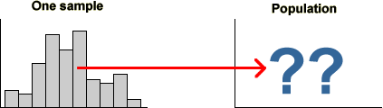

If you don't want to print now,
What is the purpose of Statistics?
When non-statisticians think of statistics, the first thing that usually comes to mind is data. Large amounts of economic, social and administrative data are routinely collected and published. Most researchers also collect data. Statistical analysis uses data, but the data are not the goal.
Data are the basic commodity of the statistics. Without data, there is no information on which to reach conclusions or base decisions.
Data contain information.
The purpose of statistics is to extract information from data.
Large data sets must be summarised before patterns and relationships can be seen. In smaller data sets, the problem is usually that there is not enough information to get a clear answer to questions of importance. Statistical methods are needed to describe precision and to ensure that the highest precision is obtained.
Context
In general, users of statistics are neither interested in data or in statistical methods, but are only interested in questions in their own subject area.
The aim of statistics is to supply useful information to people whose main area of expertise is not statistics. Statistical methods are only useful if they can extract information from data to help answer discipline-specific questions. The underlying context is therefore the most important aspect of any statistical analysis.
If you are not primarily a statistician, you will appreciate statistical methods when they are needed in your career!
Simple series of steps
The simplest application of statistics addresses a single question in the context of some practical subject area.
Statistics has a role to play in all stages of this process.
Feedback
The initial question is usually less well defined and a single pass through the process is not enough.

An example of feedback arises when a small fraction of the data is initially collected and analysed. The information obtained from this pilot study is used to refine the data collection process.
Another example of feedback occurs when the initial analysis reveals unusual or unexpected features in the data. Such features may suggest further questions and therefore further data collection.
Reasons for variability
Most statistical data sets contain measurements from a collection of 'individuals'. These individuals are not identical so measurements made from them also vary from individual to individual.
Even when the 'individuals' are very similar, recorded measurements from them often vary due to:
Explained and unexplained variation
In some data sets, we may be able to 'explain' some of the variation in terms of other known characteristics of the individuals. This helps us to understand the data and is an important part of the information (signal) in it. The remaining unexplained variation is random 'noise' that makes it harder to detect the signal.
Data structure
Context is critically important, but the statistical methods that can be used on data depend mostly on the internal structure of the data.
|
|
|
||||||||||||||||||
These three data sets have the same basic structure, so the same statistical methods can be applied to all of them.
Variables and 'individuals'
Most data sets have a fairly simple structure. One or more measurements ('variables') are recorded from each of a collection of 'individuals' (also called 'cases' or 'units'). The data can be presented in a data matrix.

If a data set contains only one variable — one measurement per individual — it is called univariate. If there are two or more variables, the data are called multivariate, with the term bivariate used for the special case where there are exactly two variables.
Most variables in a data set are either numerical or categorical.
Numerical variables
These have values that are numbers and can be further classified into:
Statistical methods that can be used for continuous variables are not always appropriate for discrete variables.
Categorical variables
The values of a categorical variable are selected from a small group of categories. A further classification is:
Most statistical methods for categorical data can be applied to both ordinal and nominal variables.
Labels
In some data sets, each individual has a unique 'name' that can be used to identify it. We call this a label variable.
Warning!
When you see a column of numbers in your data matrix, do not assume that it is a numerical variable.
Numbers are sometimes used as codes for categorical or label variables.
Categorical variables and groups
A categorical variable can be used to split the individuals in a data set into groups. We might treat individuals with values "A", "B", etc. as belonging to different groups.
Conversely, if data were separately collected from different groups of individuals, the resulting data sets could be combined with a categorical variable distinguishing between the groups. Its values might be defined as "A", "B", etc. to identify the group membership of any individual.
A categorical variable and groups are often two ways of representing the same data.
Data presented in a separate list for each group are called unstacked whereas if the data are presented as a single list alongside a categorical variable, they are called stacked.
Defining new variables
When given a data set to analyse, think about whether its variables are the most useful ones to analyse. Sometimes a simple transformation provides a variable whose values are more meaningful or highlight a different aspect of the data.
For example, although the raw GDP of countries indicates their relative importance, their GDP per capita gives better comparison of the relative wealths of individuals in these countries:
| GDP per capita = | Country's total GDP |
| Population |
As another example, although it is interesting to compare the calorie intake of countries, it is also appropriate to look at their percentage change over different periods:
| %Increase = 100 × | 1998 calories − 1993 calories |
| 1993 calories |
Relationship between variables
We are often interested in relationships between variables. The correlation between two numerical variables summarises their relationship; a contingency table contains information about the relationship between two categorical variables.
When the individuals can be split into groups, a categorical variable can be used to define group membership. Differences between the groups can then be expressed as a relationship between the grouping variable and other variables. The following questions are essentially asking the same in two different ways:
In some situations, the relationship between two variables, such as the relationship evident in a scatterplot, may not describe a meaningful 'real' relationship.
Relationships can be much harder to interpret than you might think
Primary and secondary data
When data are collected specifically to answer your question of interest, they are called primary data. Primary data may be collected via a designed experiment or an observational study such as a survey.
Data that are collected by somebody else for another purpose are called secondary data.
Types of primary data collection
In an observational study, we passively record (observe) values from each unit. Usually these units are sampled from some population.
In an experiment, the researcher actively changes some characteristics of the units before the data are collected. The values of some variables are therefore under the control of the experimenter. In other words, the experimenter is able to choose each individual's values for some variables.
Population and census
We often want to find information about a particular group of individuals (people, fields, trees, bottles of beer or some other collection of items). This target group is called the population.
Collecting measurements from every item in the population is called a census. A census is rarely feasible, because of the cost and time involved.
Simple random sample
We can usually obtain sufficiently accurate information by only collecting information from a selection of units from the population — a sample. Although a sample gives less accurate information than a census, the savings in cost and time often outweigh this.
The simplest way to select a representative sample is a simple random sample. In it, each unit has the same chance of being selected and some random mechanism is used to determine whether any particular unit is included in the sample.
Sampling from a population of values
It is convenient to define the population and sample to be sets of values (rather than people or other items). This abstraction — a population of values and a corresponding sample of values — can be applied to a wide range of applications.

Variability
Sampling from a population results in sample-to-sample variability in the information that we obtain from the samples.

Sample information about the population
In practice, we only have a single sample and this provides incomplete information about the population.

Effect of sample size
Bigger samples mean more stable and reliable information about the underlying population.
Parameters and statistics
A random sample is often used to estimate some numerical characteristic of the population, such as...
A sample statistic is often used as an estimate of the corresponding unknown parameter.
Sampling error
The difference between an estimate and the population value being estimated is called its sampling error.

Selecting a sample manually (raffle tickets)
This method is rarely used in research applications.
Selecting a sample with random numbers
To select a random sample without replacement using random numbers,
Random number between 0 and k
The easiest way to generate a random number between 0 and 357 is to use a spreadsheet such as Excel — it has a function designed for this purpose, "=RANDBETWEEN(0, 357)". A computer-generated random value is strictly called a pseudo-random number.
If a computer is not available, a sequence of random digits can be generated:
|
A random number that is equally likely to have any value between 0 and 357 can be found by repeatedly generating 3-digit numbers (between 0 and 999) until a value between 0 and 357 is obtained.
A simple random sample of individuals from a population is the easiest sampling scheme to understand, but other sampling schemes may give more accurate estimates of population characteristics.
Grouping of individuals
If the individuals in the population can be split into different groups (called strata in sampling terminology), it is often better to take a simple random sample within each separate group than to sample randomly from the whole population. This is called a stratified random sample.
The proportion sampled from the different strata are usually fixed to be the same as the proportions of individuals in the strata in the population. In a simple random sample, the proportions sampled from the strata might not match the population proportions, so a stratified random sample should be more 'representative'.

The benefits from stratified random sampling are greatest if the measurement being sampled is different in the different strata.
Sampling frame
Before taking a simple random sample or stratified random sample, a complete list of all individuals in the target population must be available. This is called a sampling frame.
Cluster sampling
If a complete sampling frame is not available, it may be possible to group the target individuals into reasonably small groups, called clusters, for which a complete list is available.
Clusters are similar to the strata that are used for stratified sampling, but are usually much smaller. For example, a cluster might contain all of the houses in a street, or all of the individuals in a household. It is not necessary to know beforehand how many individuals are in each of the clusters.
For cluster sampling, a simple random sample of clusters is selected, with all individuals in these clusters selected.
Cost advantages
Even when a complete sampling frame is available, cluster sampling might be used to reduce the cost of sampling (or to increase the sample size for the same cost) since it is often cheaper to record information from individuals in the same cluster than from different parts of the sampling frame.
Accuracy of cluster sampling
The disadvantage of cluster sampling is that estimates are usually less accurate than the corresponding estimates from a simple random sample of the same size.
However the cost advantages would permit a larger sample size, so cluster sampling may give the best estimates for a fixed cost.
Sampling from large populations
Two-stage sampling is a sampling scheme that is related to cluster sampling, but is of most use for large populations when the individuals are very widely separated in some sense. For example, many polls are conducted to obtain national information about voting intentions or consumer purchases, and there is a high cost associated with travelling between different regions.
In two-stage sampling, the population is separated into groups of adjacent individuals called primary sampling units. These primary sampling units are typically large — for example a country might be split into 20 or more regions. A small number of these are selected according to some sampling scheme, then individuals are sub-sampled within each selected primary unit.
Costs are reduced by limiting sampling to a small number of primary units. For example, if individuals are only sampled from within say 5 regions, travelling and accommodation costs will be considerably reduced.
Stratified, cluster and two-stage sampling schemes have various advantages and disadvantages, compared to a sample random sample that records information from the same number of individuals.
Problems with selecting a simple random sample
To select a simple random sample from a population, a full list is needed of individuals in the population — a sampling frame.
In some situations, a sampling frame may not be available. Even if we have a sampling frame and can select a random sample from it, the resulting list of individuals may be difficult to use by the people doing the actual data collection.
Systematic samples
It is often easier 'on the ground' to take a systematic sample instead of a simple random sample. A systematic sample can be used whenever the population can be ordered into a list in some way (though we don't need a full list before starting data collection). Only the first individual is randomly chosen, then every 10'th, 20'th, etc. individual is included in the sample.
Systematic sampling can also be used to replace simple random sampling within other sampling schemes.
Estimation
The aim of sampling is usually to estimate one or more population values (parameters) from a sample. Because we do not have complete information about the population, the estimate is unlikely to be exactly same as the value that we are estimating, so we call the difference the error in the estimate. There are different kinds of error.
Sampling error
We have presented four different ways to sample from a population
Each of these involves randomness in the sample-selection process. The error caused by randomness in the sampling process is called sampling error.
Non-sampling error
When sampling from some types of population — especially human populations — problems often arise when conducting one of the above sampling schemes. For example, some sampled people are likely to refuse to participate in your study.
Such difficulties also result in errors and these are called non-sampling errors. Non-sampling errors can be much higher than sampling errors and are much more serious.
It is therefore important to design a survey to minimise the risk of non-sampling errors.
'Missing' responses
The first two types of non-sampling error are caused by failure to obtain information from some members of the target population.
Coverage error
Coverage error occurs when the sample is not selected from the target population, but from only part of the target population. As a result, the estimates that are obtained do not describe the whole target population — only a subgroup of it.
Non-response error
In many surveys, some selected individuals do not respond. This may be caused by ...
If non-response is related to the questions being asked, estimates from the survey are likely to be biased.
'Inaccurate' responses
The next two types of non-sampling error are caused by inaccurate information being obtained from the sampled individuals.
Instrument error
Instrument error usually results from poorly designed questions. Different wording of questions can lead to different answers being given by a respondent. The wording of the question may be such as to elicit some particular response (a leading question) or it may simply be carelessly worded so that it is misinterpreted by some respondents.
Interviewer error
Interviewer error occurs when some characteristic of the interviewer, such as age or sex, affects the way in which respondents answer questions.
There are various different ways to collect information from human populations. Each method has its advantages and disadvantages.
Telephone
Mailed questionnaire
Interviewer
Houses are rarely selected at random. Often streets are randomly selected and every 5th or 10th house in the street is approached. This is called a systematic sample.
Street corner
Some surveys are conducted by approaching people in busy shopping centres or similar public places.
To reduce coverage errors, a quota sample is often used. Each interviewer is told to interview fixed numbers of old, young, male, female, etc. respondents to match the corresponding proportion in the target population.
Self-selected
Phone-in or mail-in surveys are often conducted by radio stations and magazines. The respondents are usually so unrepresentative that the results are meaningless. These types of survey should be avoided.
Summarizing Data
The initial chapters of this e-book describe statistical methods to explore and summarise a data set. Choosing appropriate methods depends on the structure of the data set — the number and types of its variables.
Probability
Chapters 2 and 3 deal with data that have already been collected, i.e. the past. We also want to think about what might happen in the future. The next two chapters consider how to make statements about the possible future value a variable might take. This is done using probability.
Inference
Inference means making a statement about a population based on data from a sample. To do this honestly, we must take account of randomness — if we collected the data again by repeating an experiment or collecting data from different people, the values would often be different. Here we need to combine the viewpoints of probability (what we expect to happen) and data summary (what actually did happen).
Special topics
Summarizing Data
Probability
Inference
Inference means making a statement about a population based on data from a sample.
Special topics